|
Roda JC - Borussia Mönchengladbach (2-1) 18 januari 2003 |
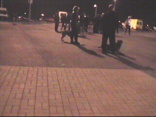
Extra politie-inzet vanwege de "speciale relatie"
tussen Aachen- en BMG-fans.
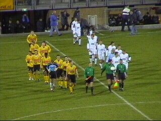
De spelers betreden het veld.
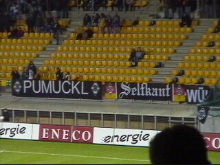
Ongeveer 300 supporters van Gladbach en een
schamele 1000 van Roda in een koud PLS.
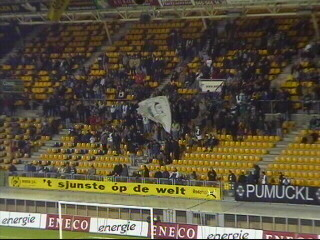
Mooi spandoek :-)))
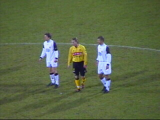
Berglund wordt goed bewaakt.
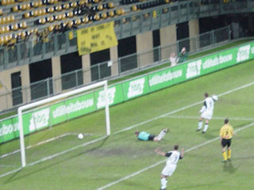
Na 10 minuten is het al 0-1.
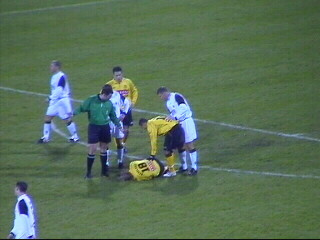
Even later valt Berglund uit. Hij wordt vervangen
door Cristiano.
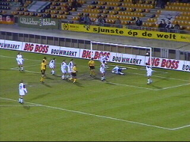
De keeper van BMG redt op de lijn.
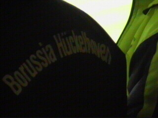
Een BH-supporter in Z16.
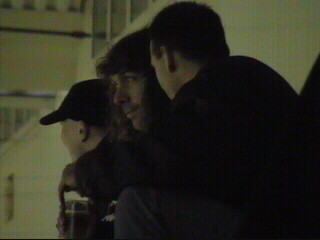
Taktisch overleg op hoog niveau.
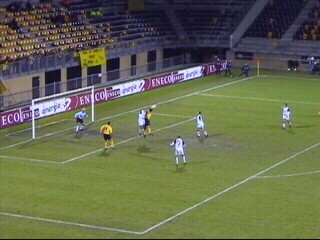
Anastasiou kopt de gelijkmaker in. 1-1.
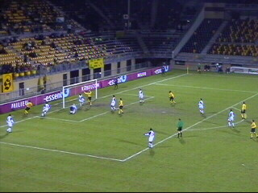
Na een perfecte voorzet van Filipovic kan na
enig geklungel in de Duitse defensie, 2-1 worden
binnengelopen door Cristiano.
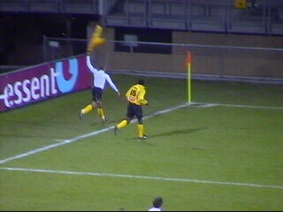
Zoals altijd is hij erg blij. Het duurde nog
ongeveer 3 min. eer hij zijn shirt weer aan had.
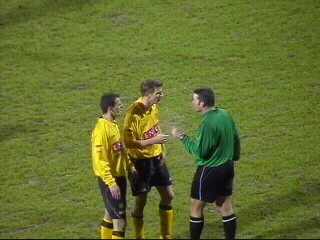
In de slotfase wordt het duo Filipovic en Luijpers
vermaand door de scheidsrechter.
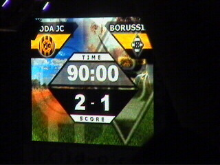
Roda wint ook van deze Bundasliga-opponent.
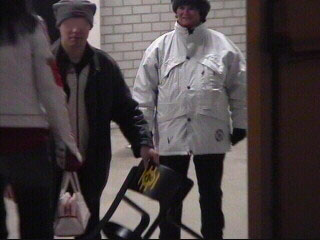
In de Kick Off mislukt de kidnapping van een
Roda-stoel :-)))
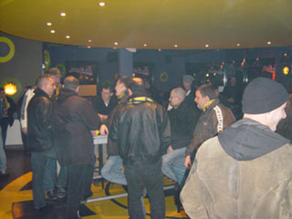
Veel HBB'ers in de Kik.
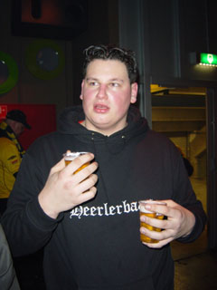
Koffieboer bereidt zich voor op
een feestje bij RKHBS.
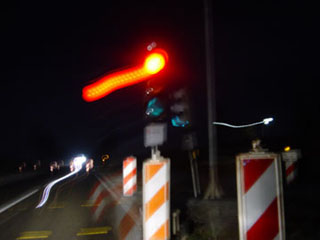
De weg huiswaart wordt vervelender nu de weg
over de Zelfkant rotondes krijgt :-(((
© Koempels
Pleasure Dome